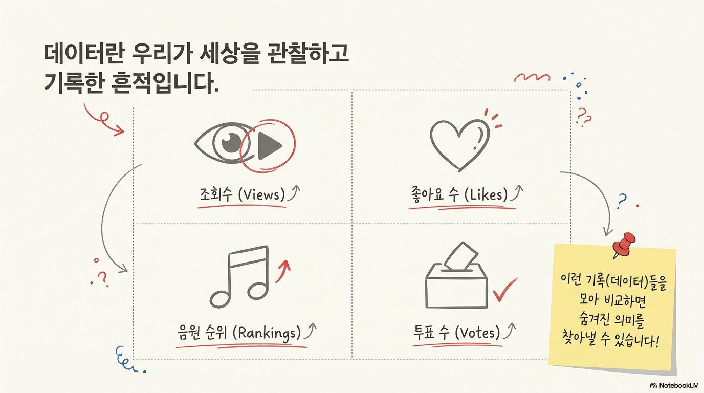
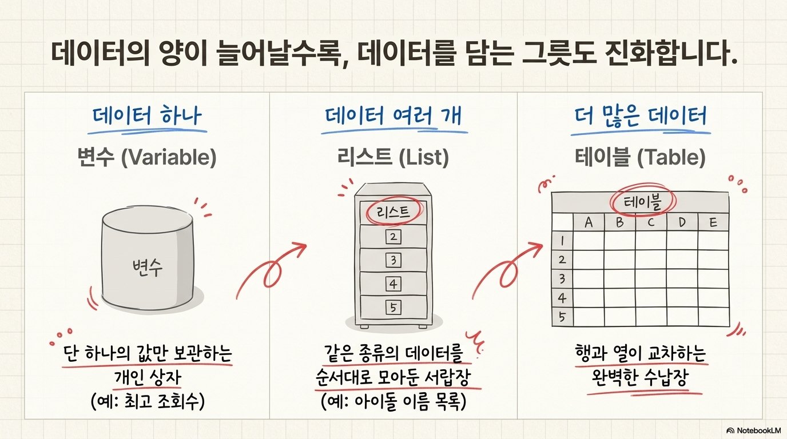
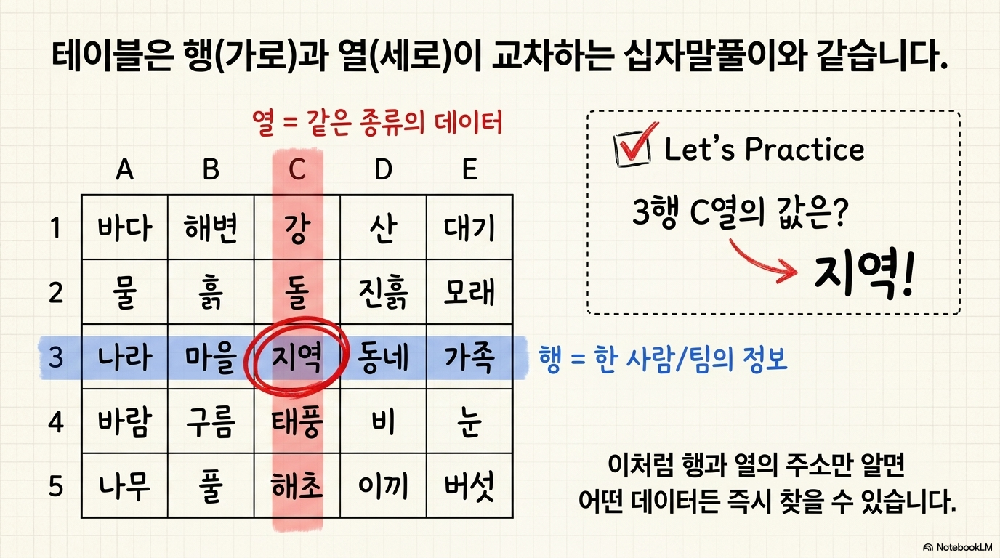
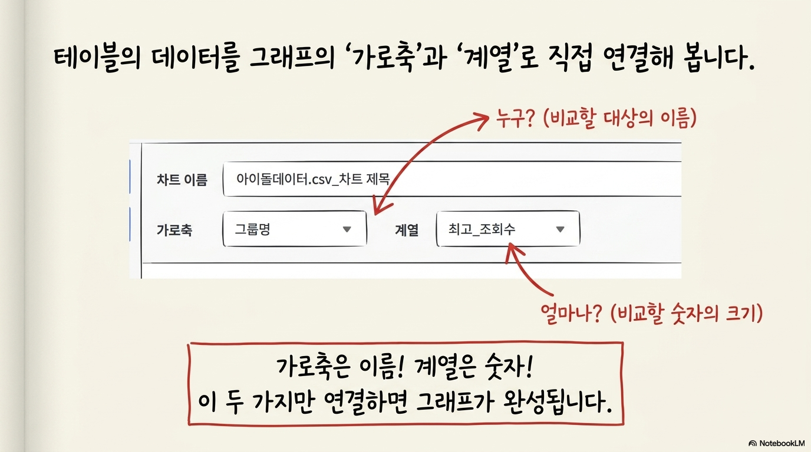
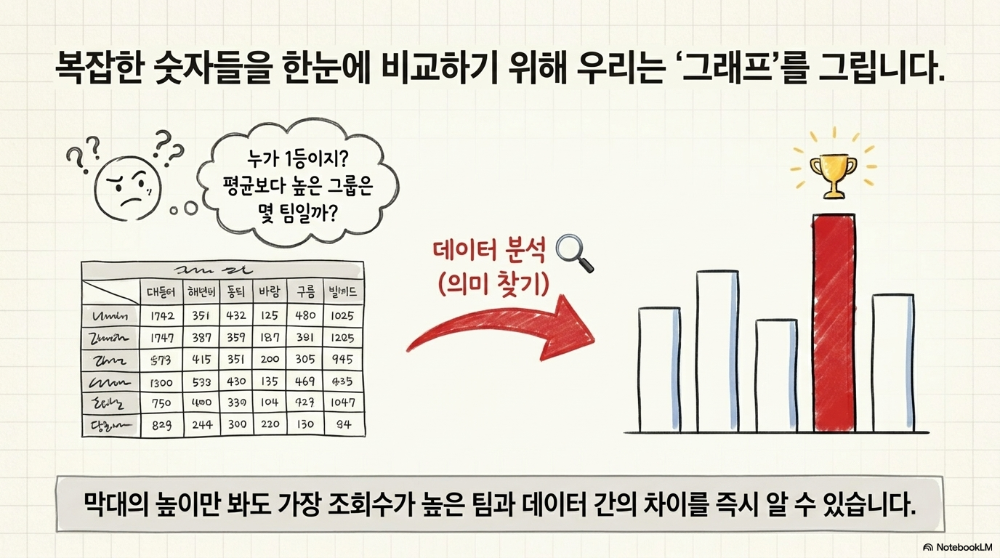
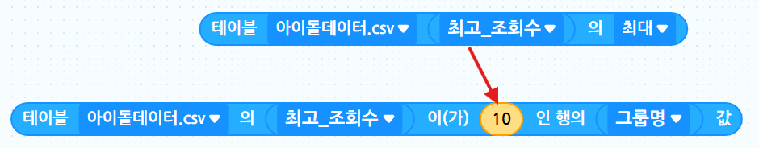

오늘의 미션
오늘은 데이터를 이용해 시상식 작품을 만들어 봅니다. MC가 후보 데이터를 분석하고, 그래프로 보여 준 뒤, 최고 조회수 그룹을 발표합니다.
1. 데이터란 무엇일까요?

예를 들어 아이돌 시상식에서는 다음과 같은 정보가 데이터가 됩니다.
| 데이터 예시 | 뜻 |
|---|---|
| 그룹명 | 후보 이름 |
| 데뷔연도 | 활동을 시작한 해 |
| 최근_음원순위 | 최근 노래 순위 |
| 최고_조회수 | 가장 많이 본 영상 조회수 |
2. 변수 → 리스트 → 테이블
데이터를 관리하는 방법은 저장할 데이터의 개수에 따라 달라집니다.

예: 대상 그룹 = 뉴진스
예: 아이브, 뉴진스, 에스파
예: 그룹명, 순위, 조회수
3. 행과 열 이해하기
테이블은 행과 열로 데이터를 찾습니다.

주관식 퀴즈
위 표를 보고 빈칸에 알맞은 값을 입력해 보세요.
4. 오늘 사용할 데이터 살펴보기
| 그룹명 | 데뷔연도 | 최근_음원순위 | 최고_조회수 |
|---|---|---|---|
| 아이브 | 2021 | 2 | 5.2 |
| 뉴진스 | 2022 | 1 | 6.1 |
| 에스파 | 2020 | 4 | 4.8 |
| 르세라핌 | 2022 | 3 | 3.9 |
| 엔믹스 | 2022 | 7 | 2.7 |
조회수 단위는 억 회입니다. 예를 들어 5.2는 5.2억 회를 뜻합니다.
5. 테이블을 그래프로 연결하기
엔트리에서 차트를 만들 때는 테이블의 열을 그래프에 연결합니다.

오늘은 그룹명을 선택합니다.
오늘은 최고_조회수를 선택합니다.
그래서 이 그래프는 아이돌 그룹별 최고 조회수 비교 그래프가 됩니다.
6. 그래프 읽기 연습
막대그래프를 보고 데이터를 비교해 봅시다.

그래프 읽는 법
막대가 높을수록 조회수가 높습니다.
Q1. 가장 조회수가 높은 그룹은?
Q2. 가장 조회수가 낮은 그룹은?
7. 데이터 분석 블록 실행 결과 퀴즈
테이블을 먼저 확인한 뒤, 명령 블록을 실행했을 때 나오는 값을 찾아보세요.
아이돌 데이터 테이블
| 그룹명 | 데뷔연도 | 최근_음원순위 | 최고_조회수 |
|---|---|---|---|
| 아이브 | 2021 | 2 | 5.2 |
| 뉴진스 | 2022 | 1 | 6.1 |
| 에스파 | 2020 | 4 | 4.8 |
| 르세라핌 | 2022 | 3 | 3.9 |
| 엔믹스 | 2022 | 7 | 2.7 |
Q1. 아래 블록을 실행하면 나오는 값은 무엇인가요?
실행할 명령 블록
힌트: 최고_조회수 열에서 가장 큰 숫자를 찾으세요.
Q2. 최대 조회수 값을 가진 행에서 ‘그룹명’ 값을 찾으면 무엇인가요?
실행할 명령 블록

힌트: 최고_조회수가 가장 큰 행의 그룹명을 찾으세요.
Q3. 두 블록을 조합했을 때 알 수 있는 실제 결과로 알맞은 것은?
명령 블록 조합
힌트: 최대 조회수와 그 그룹명을 함께 찾으세요.
8. 수업 파일 다운로드
아래 두 파일을 다운로드한 뒤 수업 순서에 맞게 사용합니다.
9. 엔트리 코딩 미션
미션 1. 시작 대사 만들기
시작하기 버튼을 클릭했을 때 MC가 “데이터 어워즈를 시작합니다!”라고 말하게 해보세요.
미션 2. 차트 보여주기
그래프 보이기 신호를 받으면 차트 창을 열어 보세요.
미션 3. 결과 발표하기
그래프를 보고 가장 높은 그룹을 찾아 “올해의 대상은 ○○입니다!”라고 발표하게 해보세요.
10. 오류 해결 체크리스트
그래프가 안 보이나요?
- CSV 파일을 제대로 불러왔나요?
- 가로축을 그룹명으로 선택했나요?
- 계열을 최고_조회수로 선택했나요?
- 숫자 데이터에 글자가 섞여 있지는 않나요?
마무리 정리
그래프는 숫자 데이터를 그림으로 바꾸어 비교하기 쉽게 도와줍니다. 오늘 만든 데이터 어워즈 작품은 데이터를 읽고 해석하는 첫 번째 데이터 분석 작품입니다.